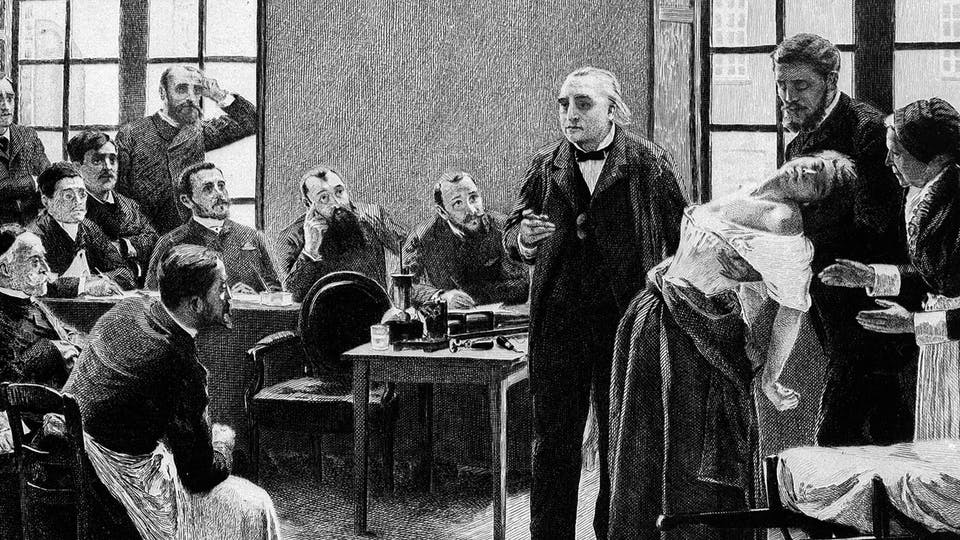

This page gives some context regarding mental health treatment at the time of The Yellow Wallpaper.
Hysteria
For centuries the term ‘Hysteria’ has been applied to Women who behaved in an irregular or undesirable manner.
History
The term dates back to 1900 BC where it was first used in Egypt. The Egyptians thought the abnormal behavior they saw was caused by the uterus wandering around the body (hystera means uterus in Greek). For many centuries after, hysteria was associated with a disease of the uterus. This changed when Cristianity became popular and attributed it to satanic possession caused by sin. The supposed symptoms of this ‘illness’ were wide-ranging and often described what we now consider normal behavior. By the 18 century, hysteria was accepted to be a medical condition with several different theories about it’s cause.
1800’s
By the 1800’s ‘hysteria’ was still a widely used medical diagnosis but was beginning to be thought of as a psychological illness instead of a physical one.It still included an absurdly wide range of symptoms from lethargy to overactive sexual desire to lack of sexual desire. There was no consensus of the cause. It wasn’t until the mid 1900’s that the diagnosis became obsolete.
Neurasthenia
Neurasthenia was a common medical diagnosis for women in the 19th century. Symptoms included fatigue, anxiety, headache, heart palpitations, high blood pressure, neuralgia, and depressed mood. It was thought to be a disease of the nervous s
Charlotte Perkins Gilman and Neurasthenia
Silas Weir Mitchell was a famous ‘expert’ on Neurasthenia. He invented and popularised the ‘rest-cure’. He actually prescribed this ‘cure’ to Gilman personally when she had symptoms of Neurasthenia. The adverse effect of this treatment directly influenced her writing of The Yellow Wallpaper.
Postpartum Depression
It’s very likely that Gilman (and her story’s narrator) were actually suffering from Postpartum Depression, which is largely caused by imbalances in levels of the hormones estrogen and progesterone after pregnancy. Unfortunately for Gilman, in 1892, she was still 10 years away from science even discovering the existence of hormones (1902) and estrogen wasn’t discovered until 1929.